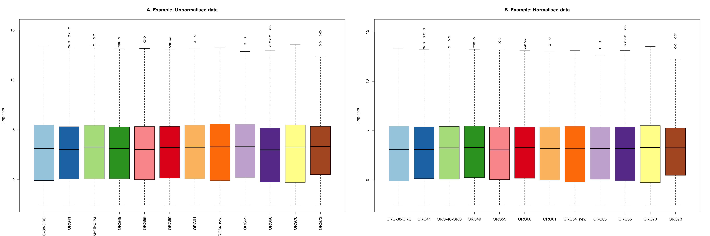

Last updated: 2024-09-25
Checks: 6 1
Knit directory: drug-AUC-analysis/
This reproducible R Markdown analysis was created with workflowr (version 1.7.1). The Checks tab describes the reproducibility checks that were applied when the results were created. The Past versions tab lists the development history.
The R Markdown file has unstaged changes. To know which version of
the R Markdown file created these results, you’ll want to first commit
it to the Git repo. If you’re still working on the analysis, you can
ignore this warning. When you’re finished, you can run
wflow_publish to commit the R Markdown file and build the
HTML.
Great job! The global environment was empty. Objects defined in the global environment can affect the analysis in your R Markdown file in unknown ways. For reproduciblity it’s best to always run the code in an empty environment.
The command set.seed(20240628) was run prior to running
the code in the R Markdown file. Setting a seed ensures that any results
that rely on randomness, e.g. subsampling or permutations, are
reproducible.
Great job! Recording the operating system, R version, and package versions is critical for reproducibility.
Nice! There were no cached chunks for this analysis, so you can be confident that you successfully produced the results during this run.
Great job! Using relative paths to the files within your workflowr project makes it easier to run your code on other machines.
Great! You are using Git for version control. Tracking code development and connecting the code version to the results is critical for reproducibility.
The results in this page were generated with repository version 31c0ce4. See the Past versions tab to see a history of the changes made to the R Markdown and HTML files.
Note that you need to be careful to ensure that all relevant files for
the analysis have been committed to Git prior to generating the results
(you can use wflow_publish or
wflow_git_commit). workflowr only checks the R Markdown
file, but you know if there are other scripts or data files that it
depends on. Below is the status of the Git repository when the results
were generated:
Ignored files:
Ignored: .DS_Store
Ignored: .Rhistory
Ignored: .Rproj.user/
Ignored: analysis/.DS_Store
Untracked files:
Untracked: analysis/RNAseq_Analysis.Rmd
Unstaged changes:
Deleted: analysis/Carboplatin_Analysis.Rmd
Deleted: analysis/Cetxuimab_Analysis.Rmd
Deleted: analysis/Cisplatin_Analysis.Rmd
Deleted: analysis/Docetaxel_Analysis.Rmd
Deleted: analysis/Doxorubicin_Analysis.Rmd
Deleted: analysis/Gemcitabine_Analysis.Rmd
Deleted: analysis/Irinotecan_Analysis.Rmd
Deleted: analysis/Mitomycin_Analysis.Rmd
Deleted: analysis/Overall_Summary.Rmd
Deleted: analysis/Oxaliplatin_Analysis.Rmd
Deleted: analysis/Paclitaxel_Analysis.Rmd
Deleted: analysis/Topotecan_Analysis.Rmd
Modified: analysis/Updated_DrugAUC.Rmd
Modified: analysis/_site.yml
Modified: analysis/index.Rmd
Note that any generated files, e.g. HTML, png, CSS, etc., are not included in this status report because it is ok for generated content to have uncommitted changes.
These are the previous versions of the repository in which changes were
made to the R Markdown (analysis/Updated_DrugAUC.Rmd) and
HTML (docs/Updated_DrugAUC.html) files. If you’ve
configured a remote Git repository (see ?wflow_git_remote),
click on the hyperlinks in the table below to view the files as they
were in that past version.
| File | Version | Author | Date | Message |
|---|---|---|---|---|
| html | a500793 | kitadalvi | 2024-09-05 | Update Updated_DrugAUC.html |
| html | 96e488c | kitadalvi | 2024-09-05 | Linked corr analysis |
| Rmd | 67e7712 | kitadalvi | 2024-09-05 | updated AUC analysis |
| html | 67e7712 | kitadalvi | 2024-09-05 | updated AUC analysis |
A quick look at the data:
# loading in data
rawdata <- read.delim2('/Users/dalvinikita/Documents/RNA-seq Analysis/Sequencing Data/collated.count.tsv', header = TRUE, check.names = FALSE, stringsAsFactors = FALSE)
head(rawdata) Gene ORG16-1Y ORG16T ORG38H ORG38HL ORG38 ORG38D ORG38L ORG41 ORG44H
1 1 5S_rRNA.1 0 0 1 0 0 0 0 0 0
2 2 5S_rRNA.100 0 0 0 0 0 2 0 0 0
3 3 5S_rRNA.103 0 0 0 0 0 0 0 1 0
4 4 5S_rRNA.105 0 1 0 0 1 1 1 1 0
5 5 5S_rRNA.106 0 0 0 0 0 0 0 0 0
6 6 5S_rRNA.110 0 0 0 0 1 1 1 0 0
ORG44 ORG46H ORG46 ORG47H ORG47 ORG49 ORG49T ORG56 ORG60 ORG60T ORG62 ORG63T
1 0 0 0 1 0 0 0 0 1 0 0 0
2 0 0 0 0 0 0 0 0 0 0 0 0
3 0 0 0 0 0 0 0 0 0 0 0 0
4 1 0 0 0 0 1 1 0 0 0 1 0
5 1 0 0 0 0 0 0 0 0 0 0 0
6 0 0 0 0 0 0 0 0 0 0 0 0
ORG66 ORG71 ORG71T ORG73 ORG73R CAF55 CAF57 CAF58 CAF62 CAF63 HOSE-ELF3-KO
1 0 1 0 0 2 0 0 0 0 0 0
2 0 0 0 0 0 0 0 0 0 0 0
3 0 0 0 0 0 0 0 0 0 0 0
4 0 1 0 0 0 1 0 0 0 0 0
5 0 0 0 0 0 0 0 0 0 0 0
6 0 0 0 0 0 0 1 0 0 0 0
HOSE JHOM-ELF3-KO JHOM MCAS-ELF3-KO MCAS RMUG-ELF3-KO RMUG SLC58 VOA4627 BJ
1 1 0 0 0 0 0 0 0 0 0
2 0 0 0 0 0 0 0 0 0 0
3 0 0 0 0 0 0 0 0 0 0
4 0 0 0 1 0 0 0 0 0 0
5 0 0 0 0 0 0 0 0 0 0
6 0 0 0 0 0 1 0 0 0 0
HFF
1 0
2 0
3 0
4 0
5 0
6 0sampleinfo <- read.delim2('/Users/dalvinikita/Documents/Drug Response Analysis/updated_sampleInfo.txt', header=TRUE, check.names = FALSE, stringsAsFactors = TRUE)
head(sampleinfo) Sample ID Type PATIENT PATTERN Batch Media Mitomycin Doxorubicin
1 ORG-38-ORG ORG ORG38 INF 1 ORG 156.1 141.2
2 ORG41 ORG ORG41 EXP 1 ORG 80.1 99.32
3 ORG46 ORG ORG46 EXP 2 ORG 80.49 120.3
4 ORG49 ORG ORG49 INF 2 ORG 41.72 78.31
5 ORG60 ORG ORG60 INF 2 ORG 166.7 148.2
6 ORG66 ORG ORG66 EXP 3 ORG 113.4 132
Staurosporine Topotecan Irinotecan Oxaliplatin Gemcitabine Carboplatin
1 35.09 118.1 198.4 223.8 155.1 256.8
2 16.83 44.23 165.9 225.3 76.88 250
3 32.21 30.97 117 215.7 51.96 221.5
4 5.847 27.42 129.2 498.9 35.48 300.7
5 45.89 70.09 167.5 211.1 145.7 230.7
6 21.27 34.27 164.8 193.5 80.76 222.8
Docetaxel Cisplatin Paclitaxel
1 155.2 205.1 157.3
2 101.2 190.2 103.1
3 77.56 187.1 69.78
4 63.52 389.5 62.57
5 119.3 195.2 113.6
6 68.85 193.8 67.05keep
FALSE TRUE
21232 17551 
| Version | Author | Date |
|---|---|---|
| 67e7712 | kitadalvi | 2024-09-05 |
keep
FALSE TRUE
22950 15833 keep
FALSE TRUE
22950 15833 keep
FALSE TRUE
22950 15833 keep
FALSE TRUE
22950 15833 keep
FALSE TRUE
22950 15833 keep
FALSE TRUE
22950 15833 keep
FALSE TRUE
22950 15833 keep
FALSE TRUE
22950 15833 keep
FALSE TRUE
22950 15833 keep
FALSE TRUE
22950 15833
R version 4.4.0 (2024-04-24)
Platform: aarch64-apple-darwin20
Running under: macOS Sonoma 14.4.1
Matrix products: default
BLAS: /Library/Frameworks/R.framework/Versions/4.4-arm64/Resources/lib/libRblas.0.dylib
LAPACK: /Library/Frameworks/R.framework/Versions/4.4-arm64/Resources/lib/libRlapack.dylib; LAPACK version 3.12.0
locale:
[1] en_US.UTF-8/en_US.UTF-8/en_US.UTF-8/C/en_US.UTF-8/en_US.UTF-8
time zone: Australia/Melbourne
tzcode source: internal
attached base packages:
[1] stats4 stats graphics grDevices utils datasets methods
[8] base
other attached packages:
[1] DT_0.33 org.Hs.eg.db_3.19.1 AnnotationDbi_1.67.0
[4] IRanges_2.39.2 S4Vectors_0.43.2 Biobase_2.65.0
[7] BiocGenerics_0.51.0 enrichplot_1.25.0 clusterProfiler_4.13.0
[10] RColorBrewer_1.1-3 ggpubr_0.6.0 edgeR_4.3.7
[13] limma_3.61.7 ggplot2_3.5.1 pheatmap_1.0.12
[16] workflowr_1.7.1
loaded via a namespace (and not attached):
[1] rstudioapi_0.16.0 jsonlite_1.8.8 magrittr_2.0.3
[4] farver_2.1.2 rmarkdown_2.27 fs_1.6.4
[7] zlibbioc_1.51.1 vctrs_0.6.5 memoise_2.0.1
[10] ggtree_3.13.0 rstatix_0.7.2 htmltools_0.5.8.1
[13] broom_1.0.6 gridGraphics_0.5-1 sass_0.4.9
[16] bslib_0.8.0 htmlwidgets_1.6.4 plyr_1.8.9
[19] cachem_1.1.0 whisker_0.4.1 igraph_2.0.3
[22] lifecycle_1.0.4 pkgconfig_2.0.3 gson_0.1.0
[25] Matrix_1.7-0 R6_2.5.1 fastmap_1.2.0
[28] GenomeInfoDbData_1.2.12 digest_0.6.36 aplot_0.2.3
[31] colorspace_2.1-1 patchwork_1.2.0 ps_1.7.7
[34] rprojroot_2.0.4 crosstalk_1.2.1 RSQLite_2.3.7
[37] fansi_1.0.6 httr_1.4.7 polyclip_1.10-7
[40] abind_1.4-5 compiler_4.4.0 bit64_4.0.5
[43] withr_3.0.1 backports_1.5.0 BiocParallel_1.39.0
[46] carData_3.0-5 viridis_0.6.5 DBI_1.2.3
[49] highr_0.11 ggforce_0.4.2 ggsignif_0.6.4
[52] MASS_7.3-61 HDO.db_0.99.1 tools_4.4.0
[55] scatterpie_0.2.3 ape_5.8 httpuv_1.6.15
[58] glue_1.7.0 callr_3.7.6 nlme_3.1-165
[61] GOSemSim_2.31.0 promises_1.3.0 shadowtext_0.1.4
[64] grid_4.4.0 getPass_0.2-4 reshape2_1.4.4
[67] fgsea_1.31.0 generics_0.1.3 gtable_0.3.5
[70] tidyr_1.3.1 data.table_1.15.4 tidygraph_1.3.1
[73] car_3.1-2 utf8_1.2.4 XVector_0.45.0
[76] ggrepel_0.9.5 pillar_1.9.0 stringr_1.5.1
[79] yulab.utils_0.1.5 later_1.3.2 splines_4.4.0
[82] dplyr_1.1.4 tweenr_2.0.3 treeio_1.29.0
[85] lattice_0.22-6 bit_4.0.5 tidyselect_1.2.1
[88] GO.db_3.19.1 locfit_1.5-9.10 Biostrings_2.73.1
[91] knitr_1.48 git2r_0.33.0 gridExtra_2.3
[94] xfun_0.46 graphlayouts_1.1.1 statmod_1.5.0
[97] stringi_1.8.4 UCSC.utils_1.1.0 lazyeval_0.2.2
[100] ggfun_0.1.5 yaml_2.3.10 evaluate_0.24.0
[103] codetools_0.2-20 ggraph_2.2.1 tibble_3.2.1
[106] qvalue_2.37.0 ggplotify_0.1.2 cli_3.6.3
[109] munsell_0.5.1 processx_3.8.4 jquerylib_0.1.4
[112] Rcpp_1.0.13 GenomeInfoDb_1.41.1 png_0.1-8
[115] parallel_4.4.0 blob_1.2.4 DOSE_3.31.2
[118] tidytree_0.4.6 viridisLite_0.4.2 scales_1.3.0
[121] purrr_1.0.2 crayon_1.5.3 rlang_1.1.4
[124] cowplot_1.1.3 fastmatch_1.1-4 KEGGREST_1.45.1